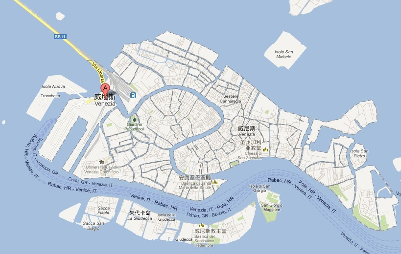
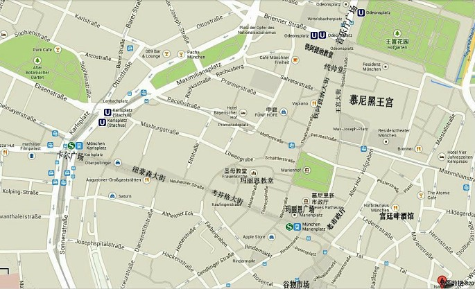
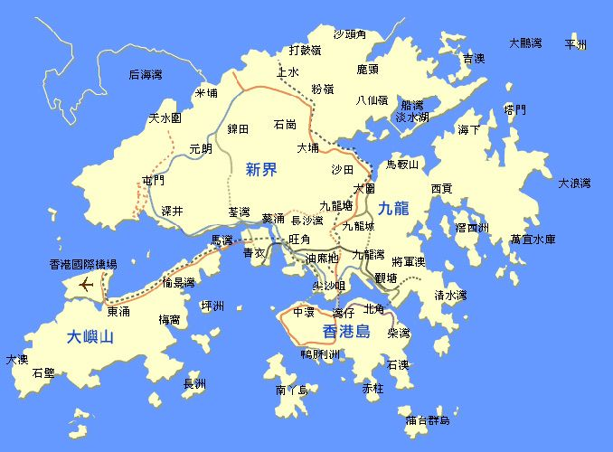

威尼斯
威尼斯曾经是威尼斯共和国的中心，被称作“亚得里亚海明珠”，十字军进行十字军东征时也曾在这里集结，而且也是13世纪至17世纪末一个非常重要的商业艺术重镇，堪称世界最浪漫的城市之一。 威尼斯市区涵盖意大利东北部亚得里亚海沿岸的威尼斯潟湖的118个岛屿和邻近一个半岛，更有117条水道纵横交叉。这个咸水潟湖分布在波河与皮亚韦河之间的海岸线。
威尼斯的风情总离不开“水”，蜿蜒的水巷，流动的清波，宛若默默含情的少女，眼底倾泻着温柔。其建筑、绘画、雕塑、歌剧等在世界有着极其重要的地位和影响。威尼斯因“因水而生，因水而美，因水而兴”的美誉，享有“水城”“水上都市”“百岛城”等美称。

慕尼黑
慕尼黑（德文：München），也称明兴，是德国巴伐利亚州的首府。慕尼黑分为老城与新城两部分，总面积达310平方公里。2010年人口为130万，是德国南部第一大城，全德国第三大城市（仅次于柏林和汉堡）；都会区人口达到270万。
慕尼黑位于德国南部阿尔卑斯山北麓的伊萨尔河畔，是德国主要的经济、文化、科技和交通中心之一。慕尼黑同时又保留着原巴伐利亚王国都城的古朴风情，因此被人们称作“百万人的村庄”。是生物工程学、软件及服务业的中心。
慕尼黑是德国第二大金融中心（仅次于法兰克福），慕尼黑是欧洲重要的出版中心之一，拥有《南德意志报》出版社等众多出版社。

香港
香港（粤拼：hoeng1 gong2；英文：Hong Kong；普通话拼音：xiāng gǎng；缩写：HK），简称“港”，全称为中华人民共和国香港特别行政区（HKSAR）。地处中国华南地区，珠江口以东，南海沿岸，北接广东省深圳市，西接珠江，与中华人民共和国澳门特别行政区、广东省珠海市以及中山市隔着珠江口相望，其余两面与南海邻接。
香港是全球高度繁荣的国际大都会之一，全境由香港岛、九龙半岛、新界等3大区域组成，管辖陆地总面积1104.32平方公里，截至2014年末，总人口约726.4万人，人口密度居全世界第三。
香港是继纽约、伦敦后的世界第三大金融中心，曾齐称为“纽伦港”，在世界享有极高声誉。是国际和亚太地区重要的航运枢纽和最具竞争力的城市之一，连续21年经济自由度指数位居世界首位。
